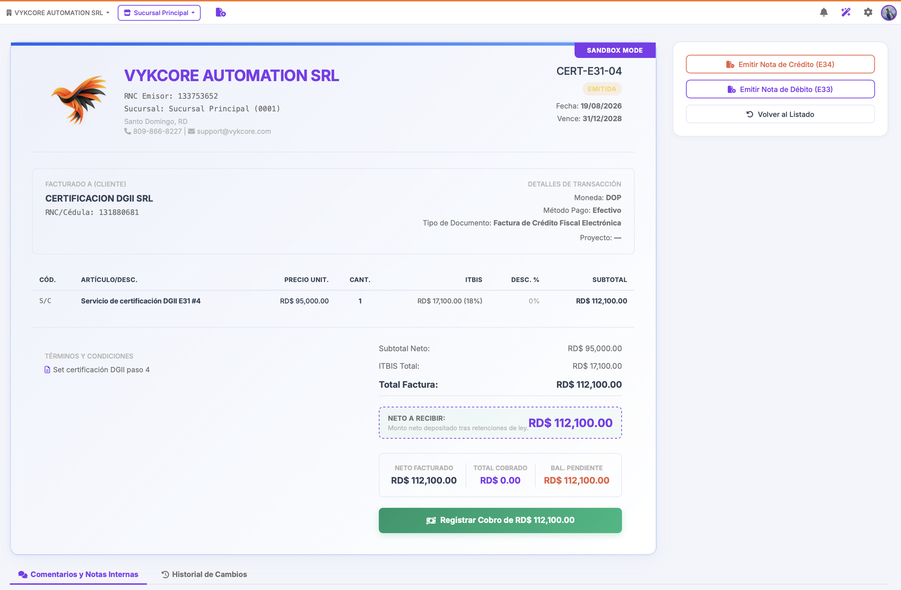
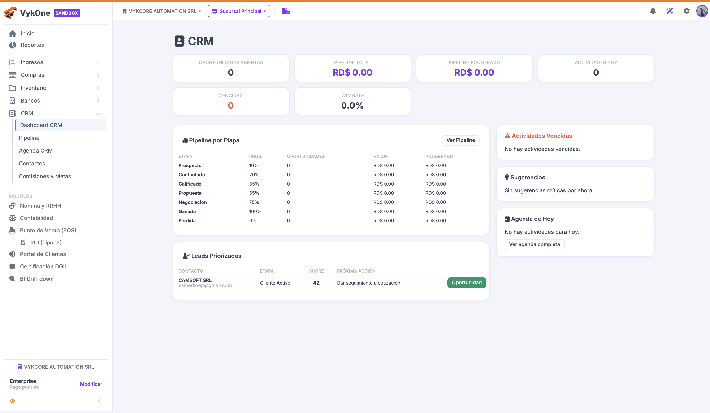
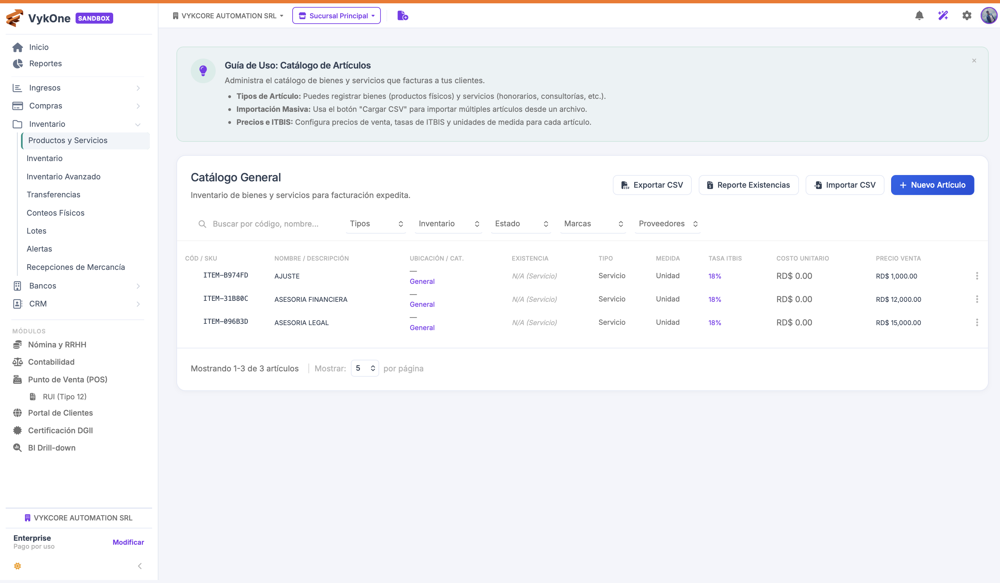
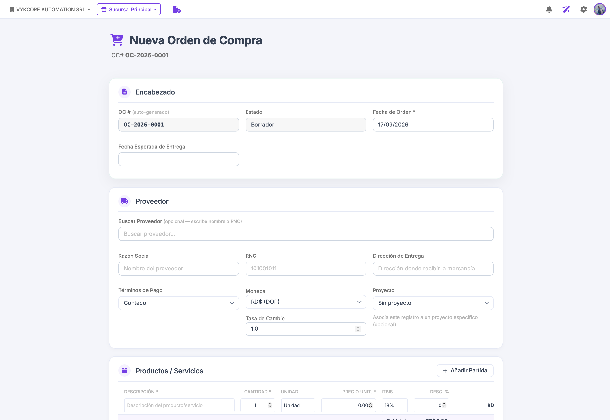
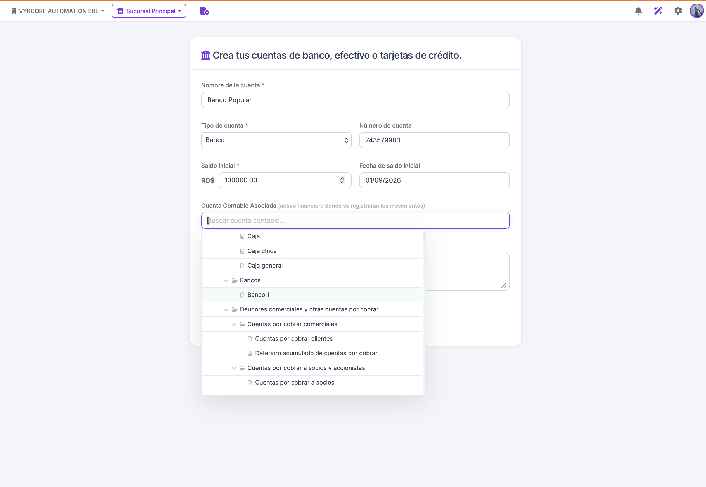
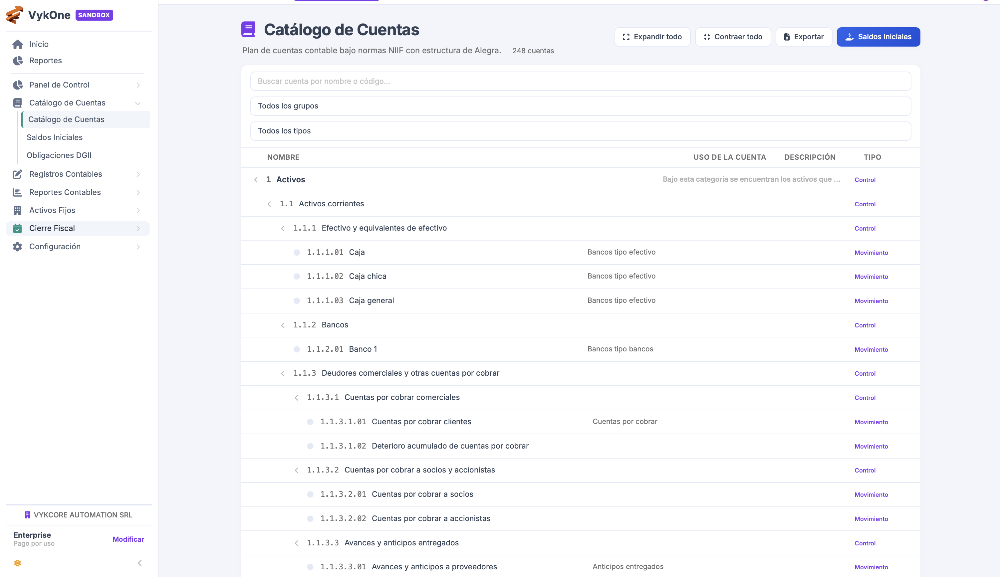
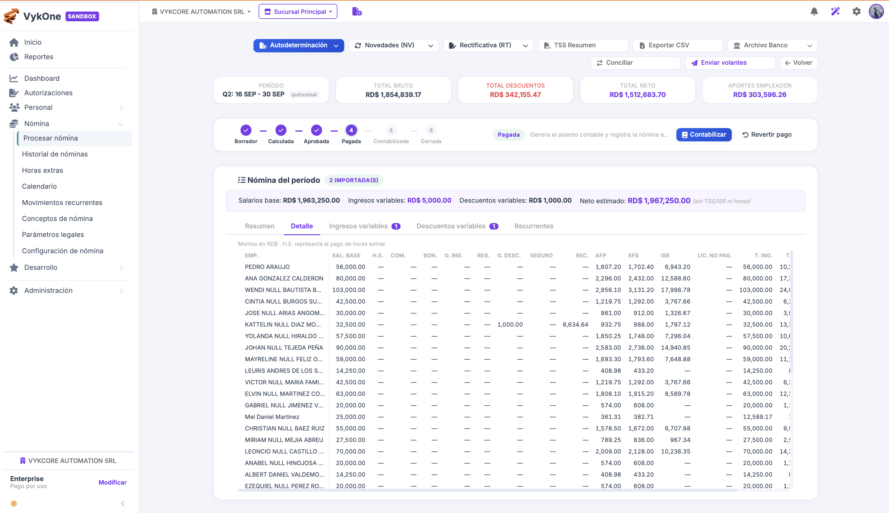
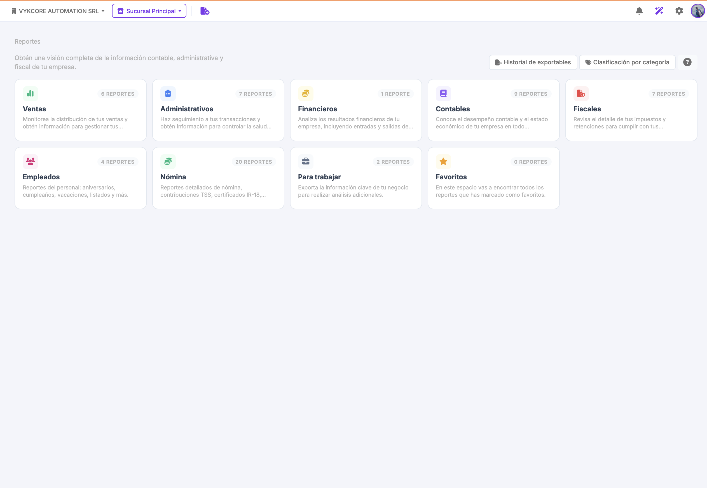

01
Menos tareas repetitivas
Automatiza cálculos, documentos, movimientos y reportes para que tu equipo se concentre en hacer crecer el negocio.
Gestión empresarial para República Dominicana
VykOne conecta facturación, ventas, finanzas, inventario, nómina y clientes para que tu empresa opere con más claridad y control.
Las empresas crecen cuando sus equipos pueden tomar decisiones con información confiable. VykOne reúne los procesos clave de tu organización en una plataforma web diseñada para el día a día de las empresas dominicanas.
Automatiza cálculos, documentos, movimientos y reportes para que tu equipo se concentre en hacer crecer el negocio.
Consulta estados, saldos, existencias, pagos y resultados desde paneles claros y trazables.
Convierte la información diaria en una visión ejecutiva para actuar antes de que aparezcan los problemas.
Emite comprobantes electrónicos con un flujo sencillo, controlado y preparado para las exigencias de la DGII.

Ordena el ciclo comercial y conserva toda la historia de cada relación con tus clientes.
Crea cotizaciones profesionales, administra sus estados y conviértelas en facturas sin volver a cargar la información.
Visualiza tu pipeline, registra actividades y da seguimiento a cada oportunidad hasta el cierre.

Conoce qué tienes, dónde está y qué necesitas reponer para operar sin sorpresas.

Conecta las obligaciones con los ingresos y conoce la posición financiera de tu negocio.
Registra proveedores, gastos y documentos de compra con sus vencimientos y soportes.
Controla saldos de clientes, registra abonos y consulta el estado de cada factura.
Administra movimientos, pagos, transferencias y conciliaciones para mantener tus saldos al día.


Obtén una contabilidad organizada y conectada con la operación real de tu empresa.

Gestiona la información laboral y ejecuta la nómina con reglas adaptadas a la realidad dominicana.
Empleados, contratos, departamentos, puestos, salarios, vacaciones, licencias y novedades en un solo expediente.
Procesa periodos, ingresos, descuentos, deducciones y aportes patronales con trazabilidad.
Apoya la preparación de aportes TSS, ISR y reportes laborales requeridos por la operación.
Facilita el acceso a información y solicitudes mediante portales y flujos definidos.

Transforma la actividad diaria en reportes claros para tu equipo, tu contador y tus obligaciones fiscales.
Organiza la información de compras y gastos para su revisión fiscal.
Consolida las operaciones de ingresos y comprobantes emitidos.
Prepara la información relacionada con retenciones aplicables.
Apoya la revisión de ITBIS y la cuadratura de tus periodos.

El dashboard reúne indicadores, flujo de caja, compromisos comerciales y el estado de tus operaciones para ayudarte a priorizar.
Protege la operación con permisos, separación de funciones, respaldos y una bitácora de actividad.
Define accesos por responsabilidad para que cada persona trabaje con el nivel adecuado de información.
Consulta quién realizó cada acción relevante y conserva la trazabilidad de los procesos.
Genera respaldos exportables y mantén una estrategia de continuidad para tus datos.
Nuestro proceso lleva a tu equipo desde la configuración inicial hasta una operación estable, con capacitación por rol y acompañamiento durante el arranque.
Definición del plan, usuarios, datos fiscales y alcance.
Empresa, impuestos, certificado, secuencias y datos maestros.
Validación de procesos críticos en ambiente de pruebas.
Primera emisión real y verificación de la operación.
Sesiones prácticas para cada perfil del equipo.
Seguimiento intensivo y transición al soporte regular.
El alcance final puede ajustarse según el tamaño, la operación y las necesidades particulares de cada empresa.
La próxima etapa de tu empresa comienza aquí
Conversemos sobre cómo VykOne puede ayudarte a simplificar, controlar y hacer crecer tu negocio.